Logs
The Logs section provides access to service logs and tools for filtering, viewing, and exporting log data.
To open logs, select the corresponding menu item.
{kind=link}
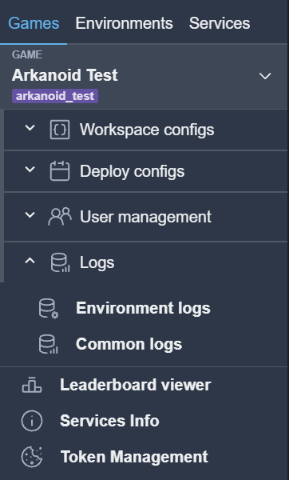
The service supports two log types:
Environment logs
Common logs
{kind=link}
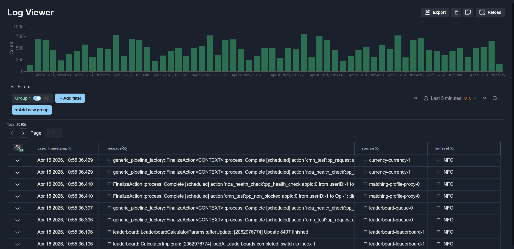
Top toolbar
The toolbar provides the following controls:
Export (1) — exports log data to a CSV file. In the modal window, you can add or remove columns and drag them to reorder.
Copy (2) — copies the current filters as a JSON string, useful for sharing filter configurations.
Upload (3) — pastes and applies filters from a JSON string.
Reload (4) — reloads logs and fetches the latest data.
{kind=link}
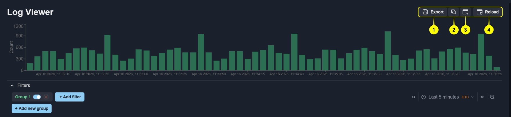
Export Logs (1)
{kind=link}
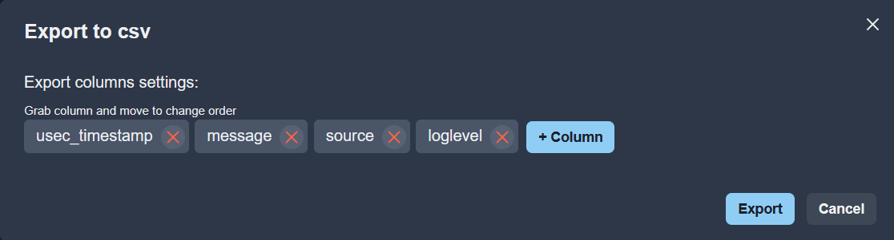
To add a column, click the + Column button. Select the required column names from the list. Remove columns in the same list or inside modal window.
{kind=link}
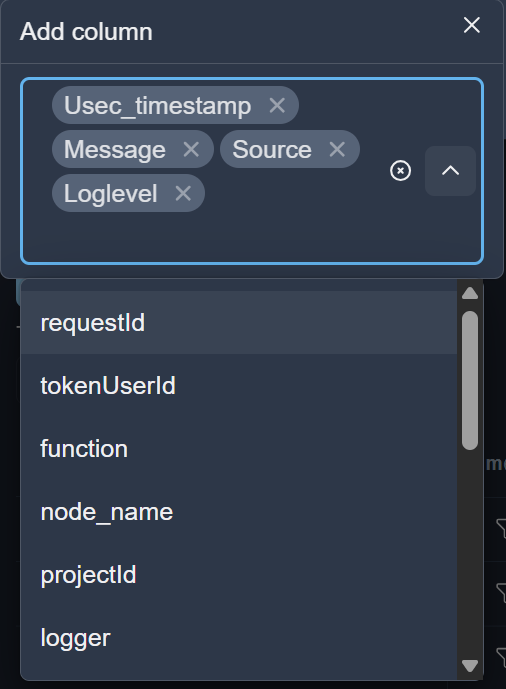
To confirm, click the Export button inside modal window.
Copy (2) and Upload (3) filters
To copy the current filters, click the Copy (2). To apply filters from JSON, click the Upload (3) and paste filters in the editor inside modal window. Click Load to confirm.
{kind=link}
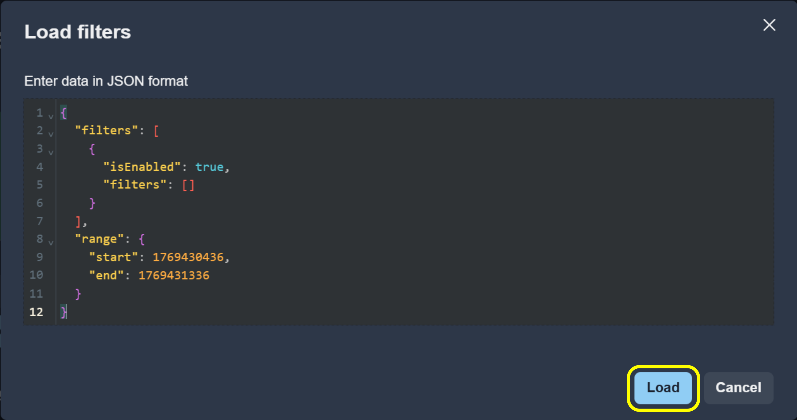
Note
Filters and environments can be restored from a URL. If the browser address bar contains data after the
resource parameter, filter values are automatically restored from it.
Filters management
Filters allow you to narrow down log records based on specific criteria.
Filters accordion (1) — collapses or expands the filters section.
+ Add new group (2) — adds a filter group. Groups are combined with OR logic: Group 1 OR Group 2 OR Group 3, etc.
+ Add filter (3) — adds a filter to the current group.
Switch (4) — enables or disables a filter or an entire group. When a group is disabled, none of its filters are applied regardless of their individual state.
Remove (5) — removes a filter or a group. The first group cannot be deleted; only its filters are cleared.
Time Range (6) — defines the time interval for log queries. See Time Range for details.
{kind=link}
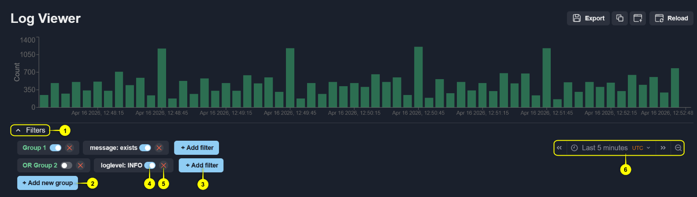
Adding (3) and editing a filter
To add a new filter, click + Add filter (3). To edit an existing filter, click on it. In the modal window, configure the field, operator, and value if needed. Some operators support multiple values — enter each one inside Value using Enter to separate them. Confirm your changes by clicking the Save button.
{kind=link}
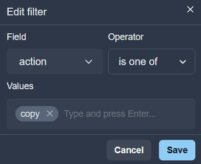
Filter can also be added directly from a log row using the filter icon.
{kind=link}
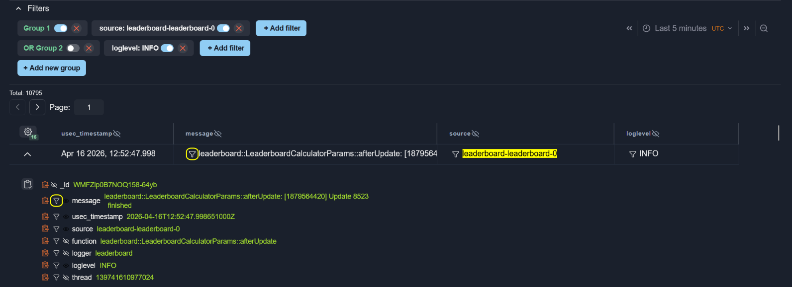
Values that match active filters are highlighted in the log table.
Log Viewer Chart
The chart visualizes log distribution over time.
{kind=link}
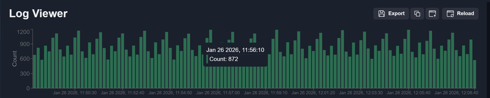
To apply a time range from the chart, select a range using the cursor.
{kind=link}
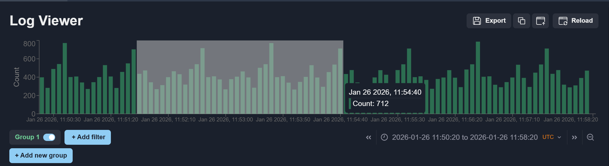
To view logs for a specific chart value, click the corresponding data point.
{kind=link}
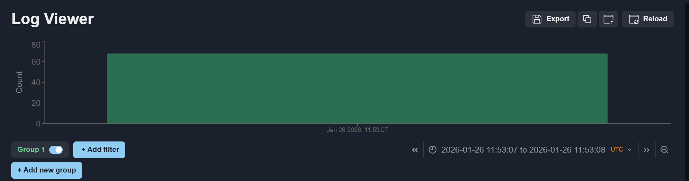
Note
To return to the previous filter state, use the browser Back and Forward buttons.
Log Viewer Table
Log Details
To view detailed information for a log entry, click the Details button.
{kind=link}
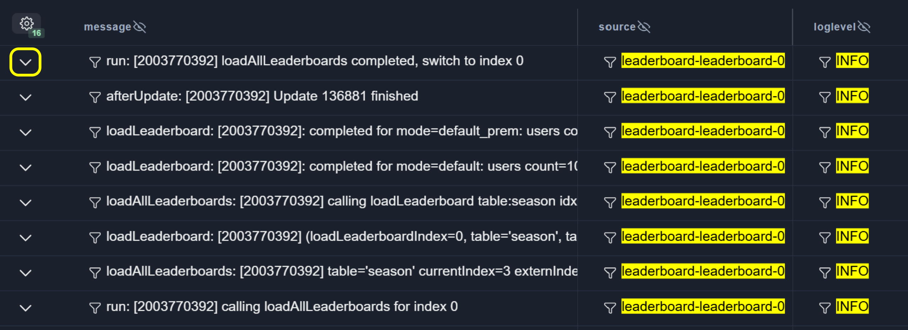
To copy a value to the clipboard, click the Copy button.
{kind=link}
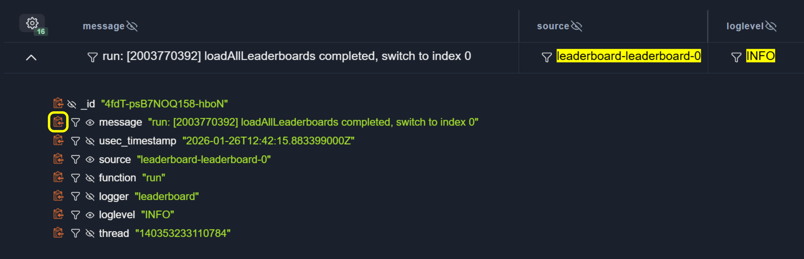
Pagination
Use the Previous and Next buttons to navigate between pages.
{kind=link}
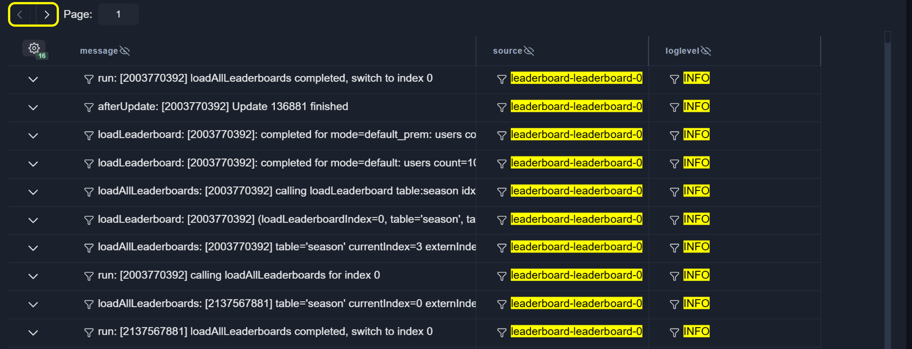
To jump to a specific page, enter the page number in the input field.
{kind=link}
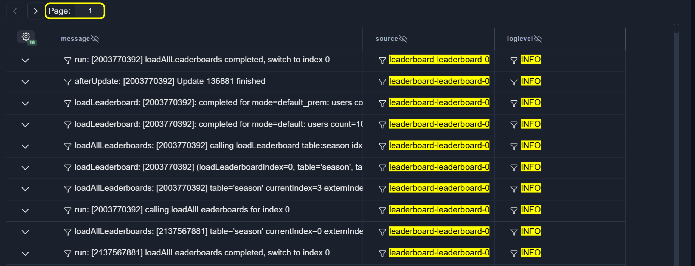
If the requested page cannot be loaded, an error message is displayed.
{kind=link}
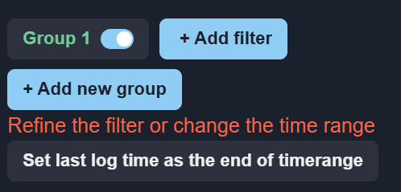
Column Width
To resize a column, hover over the column divider and drag it to the desired width.
{kind=link}
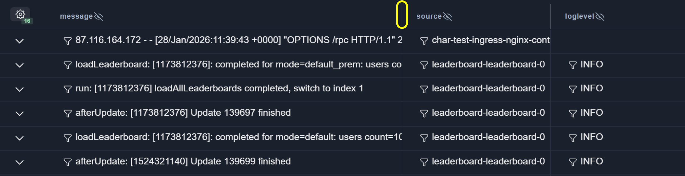
Table Settings
To open the table settings menu, click the Table settings button.
{kind=link}
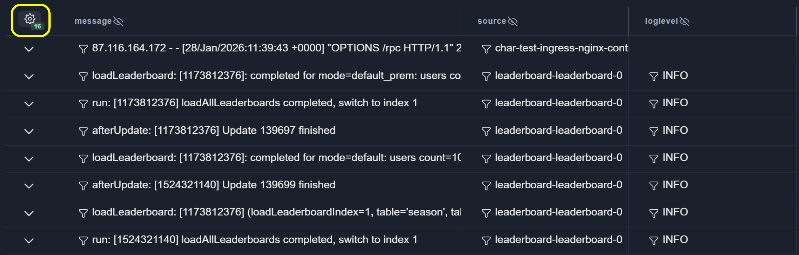
The settings window displays the number of hidden columns.
{kind=link}
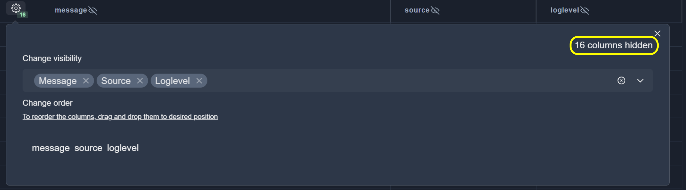
Manage column visibility using the visibility selector.
{kind=link}
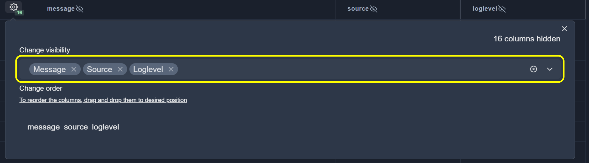
Column visibility can also be changed directly from the table.
{kind=link}
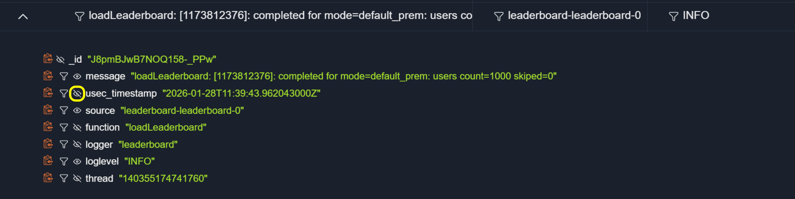
Note
At least one column must remain visible.

To reorder columns, drag them to the required position in the settings panel.
{kind=link}
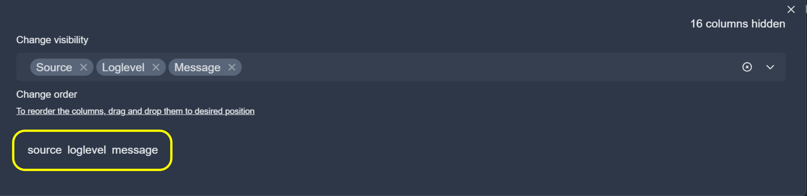